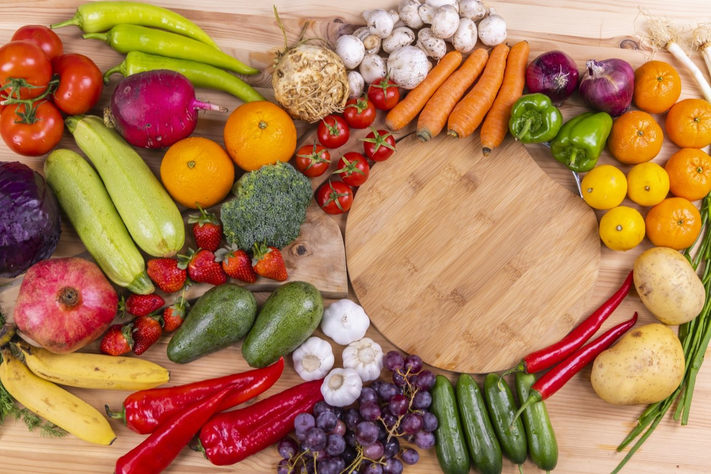
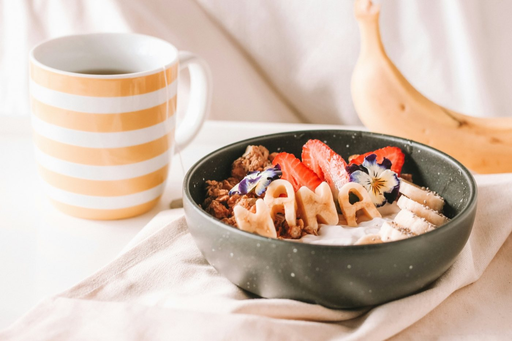
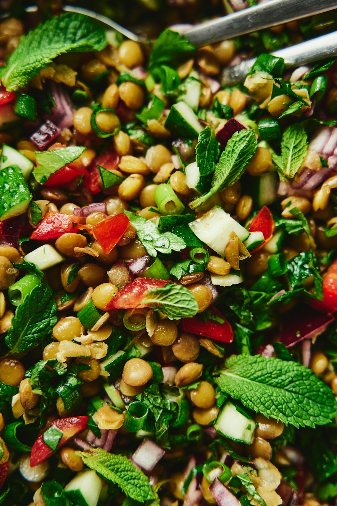
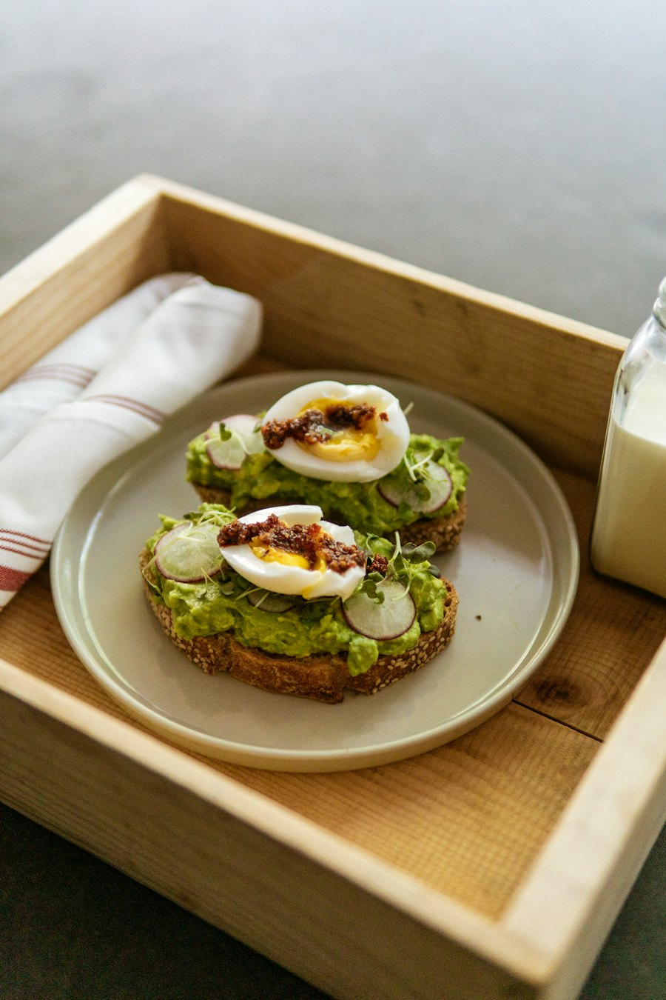

Cada año aparece una dieta milagrosa: sin carbohidratos, solo batidos, ayunos extremos. Casi todas funcionan un tiempo y luego se abandonan, porque nadie puede vivir para siempre de prohibiciones. Comer bien es más sencillo: elegir alimentos poco procesados, en cantidades que te dejen satisfecho, y disfrutar mientras lo haces.
Proteína: huevo, pollo, pescado, fríjoles o lentejas. Cereales o tubérculos: arroz integral, avena, papa o plátano. Un toque de grasa buena como aguacate, aceite de oliva o nueces. Y para beber, agua la mayor parte del tiempo.
No hay alimentos prohibidos: hay alimentos de todos los días y alimentos de vez en cuando.
El cerebro tarda unos 20 minutos en recibir la señal de saciedad. Comer rápido y frente a una pantalla hace que comamos más sin notarlo. Deja los cubiertos entre bocados y siente los sabores. Si un día comes de más, no pasa nada: una comida no define tu salud.

Media taza de avena, una taza de leche, un banano, canela y nueces.
Calienta la leche con la avena y la canela cinco minutos. Sirve con el banano y las nueces.

Lentejas cocidas, arroz integral, tomate, pepino, cebolla morada, aguacate y limón.
Pica las verduras en cubos, sirve todo junto y aliña con limón, aceite y sal.

Dos tajadas de pan integral, medio aguacate, un huevo, tomate, sal y pimienta.
Tuesta el pan, unta el aguacate machacado y pon encima el huevo y el tomate.
Una receta imperfecta hecha en casa vale más que una perfecta que nunca cocinas.